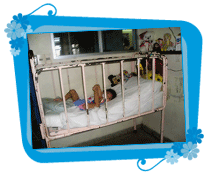

| Inicio | Objetivo | Voluntarias en el Hospital | Talleres | Eventos | Fotos | Grupo de Voluntarias | Colaboraciones |
 |
Puede colaborar a través de donaciones de: Pabellón Oteiza, Hospital Pereira Rossell (Br. Artigas 1550)
BROU Si desea colaborar de otra forma, por favor comuníquese con nosotros a los datos de contacto. TODA DONACIÓN SERÁ MUY BIENVENIDA Y AGRADECIDA POR EL VOLUNTARIADO, PERO SOBRE TODO POR LOS DESTINATARIOS QUE EN ESTE CASO SON LOS NIÑOS DE NUESTRO PAÍS. |
| voluntariasdelpereira.org.uy ® 2006 - All rights reserved. |